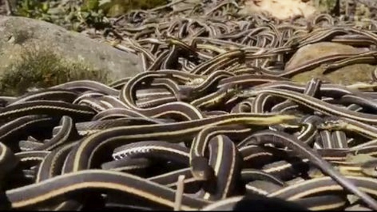

Fobiile
Ce sunt fobiile?
Fobia este o teama persistenta si irationala de un obiect sau o situatie care in general este considerata neamenintatoare. Teama este insotita de dorinta de a evita situatia sau obiectul care induce teama si, in unele cazuri, imposibilitatea de a functiona normal in diverse sarcini cum ar fi serviciul sau situatiile sociale.
Cauze
Cauzele fobiei sunt in mare parte necunoscute inca. Totusi, se pare ca exista o corelatie stransa intre fobia pacientului si fobia parintilor acestuia. Copiii pot invata fobiile observand reactiile fobice ale unui membru al familiei la un obiect sau o situatie. Un exemplu de fobie invatata este teama de serpi. Neurotransmitatorii din creier, genetica si experientele traumatice de asemeni par sa influenteze dezvoltarea fobiilor.
Simtome
- Senzatii fizice: ritm cardiac accelerat; transpiratie; tremurãturi; respiratie acceleratã; senzatie de sufocare sau de insuficientã respiratorie; tensiune muscularã; „fluturi” în stomac; greata; slabiciune musculara; intepãturi la nivelul membrelor; valuri de cãldurã si frig; dureri în piept.
- Actiuni sau comportamente: impulsul de a pleca sau plecarea propriu-zisã din acea situatie; senzatia de a fi pironit pe loc; izbucnirea în plâns sau tipete, lesin, atacuri de panicã.
- Gânduri: gândire confuzã sau „golirea mintii”; „s-ar putea întâmpla ceva rãu”; „e periculos”, depersonalizare, pierderea concentrãrii.
Diagnostic
Diagnosticul de fobie specificã este pus numai dacã comportamentul de evitare interfereazã cu rutina normalã a persoanei sau cu activitãþile de zi cu zi, dacã existã o suferinþã marcantã în legãturã frica. Cele mai multe ori fobiile care încep în copilarie dispar fãrã tratament, însã cele care persistã pânã în perioada adultã se remit rar fãrã tratament.
Complicatii
- izolarea sociala: pacientul cu fobie poate evita situatiile sociale si locurile publice; pot apare probleme financiare, profesionale sau interpersonale datorita fobiei sociale si agorafobiei;
- depresia: evitarea mai multor activitati pe care alti oameni le considera placute in viata personala si profesionala poate duce la aparitia depresiei;
- abuzul de substante: unele persoane cu fobii apeleaza la alcool sau alte droguri pentru a face fata stresului; aceasta alegere nesanatoasa si neinteleapta poate duce la abuzul de alcool sau alte droguri
Exemple de fobii:
| FOBIE | DESCRIERE |
|---|---|
| Aihmofobie | frica de ace |
| Bacteriofobie | frica de bacterii |
| Claustrofobie | frica de spatii inchise |
| Dentofobie | frica de dentist |
| Hemofobie | frica de sange |
| Necrofobie | frica de morti |
| Pirofobie | frica de incendii |
| Sociofobie | frica de evaluare sociala |
| Tonitrofobie | frica de tuneluri |